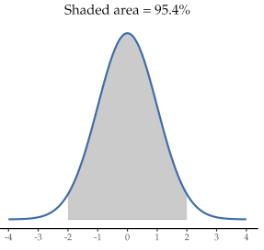

Statistical Theory
ReTune Fall School
17th of October, 2025
Statistical Thinking
statistical inference = learning from data.
We don’t only want to describe the data at hand, but learn about the world.
We use models, simplifications, of the world.
“a systematic way of thinking about how we describe the world and use data [to] make decisions and predictions, all in the context of the inherent uncertainty that exists in the real world.” (Poldrack, Preface of ST21)
“Statistical thinking is a way of understanding a complex world by describing it in relatively simple terms that nonetheless capture essential aspects of its structure or function, and that also provide us some idea of how uncertain we are about that knowledge.” (Poldrack, Chapter 1)
Probability
If we have collected data from a sample, e.g. exam scores of men and women, and we calculated their group means and SDs, we could see that men scored slightly higher (67.6) than women (66.2). But how do we know whether this difference is meaningful beyond the scope of the sample?
Probability:
“What are the chances of a fair coin coming up heads 10 times in a row?”
Statistics:
“If my friend flips a coin 10 times and gets 10 heads are they playing a trick on me?”
Probability provides a model of the world (e.g. the coin is fair and we have a 50% probability that it will come up heads), statistics has data (10 heads in a row).
Statistical inference means figuring out which of the models (probability) is the most likely for our data. We thus need probability.
Frequentist vs. Bayesian View
Frequentist: For the next 100 days, the weather forecast predicts 60% rain, which means that on 60 days, it will rain. (The probability gets closer to its real value over time).
Bayesian: The weather forecast predicts 60% rain for the next 100 days, which means that I expect it to rain tomorrow with 60% chance (degree of belief).
Probability Theory
Definitions:
Experiment: Activity that produces outcome
Sample space: Set of possible outcomes for an experiment
Event: Subset of the sample space, an outcome
Experiment: e.g. roll a die
Sample space: six-sided die: {1,2,3,4,5,6}
Event: e.g. 3
Probability Theory 2
Let’s say we have a variable \(X\) that contains \(N\) independent events:
\[ X = E_1, E_2, …, E_n \]
The probability of a certain event (event \(i\)) is then formally written as:
\[ P(X = E_i) \]
Formal features of probability theory:
Probability can’t be negative.
The total probability of outcomes in the sample space is 1.
The probability of any individual event can’t be greater than 1.
Probability Distributions
If we assign a certain probability to each event, we have a probability distribution!

Probability distributions are central to determine how likely an observed outcome is given a certain model (i.e. that specific probability distribution).
There are different probability distributions that are often used.
The Binomial Distribution
The binomial (“two categories”) distribution is used for discrete data with two possible outcomes (e.g., flipping a coin). It models the number of successes being observed (e.g., heads), given the probability of success (0.5 for fair coins) and the number of observations (flips of a coin, e.g., 10).
How many heads (successes) should we expect and with what probability?
We can simulate 10 coin flips (or dice) each 10.000 times and count the number of heads (out of the 10). We can use this distribution to work out the probability of different outcomes, e.g., getting at least 3 heads (or 6s) out of 10 tosses (dice rolls).
The Normal Distribution
The normal distribution is very common in statistics (i.e., in the real world). It (roughly) reflects the probability of any value occurring for a continuous variable, such as height.

The normal distribution is always symmetrical
=> equal probability of observations above and below the mean.
=> the mean, median, and mode are all equal!
distribution along the x-axis.

or narrower (higher SD) distributions.
The Normal Distribution


Sampling
We have already mentioned the difference between the whole population and our sample. We usually measure a sample, hoping it would let us generalize and make a statement about a population.
To be able to draw inferences from a relatively small sample to a population is one of the core ideas of statistics.
Why do we sample?
Time: It’s often impossible to measure whole population.
A subset (sample) might be sufficient to estimate a value of interest (diminishing marginal returns).
How Do We Sample?
The sample needs to be representative of the entire population, that’s why it’s critical how we select the individuals.
Think about examples of non-representative samples!
Representative: Every member of the population has an equal chance of being selected.
If non-representative: sample statistic is biased, its value is (systematically) different from the true population value (parameter).
(But talking about bias is mostly a theoretical discussion: Usually we of course don’t know the population parameter and thus cannot compare our estimate with it! Otherwise we wouldn’t need to sample.)
Different Ways of Sampling
without replacement: Once a member of the population is sampled, they are not eligible to be sampled again. This is the most common variant of sampling.
with replacement: After a member of the population has been sampled, they are put back into the pool and could potentially be sampled again. This usually happens out of accident or by necessity (cf. Bootstrapping)
But we also have:
- stratified sampling, snowball sampling, convenience sampling…
Population Parameters and Sample Statistics
The population parameter is the actual (e.g.) mean and SD in the whole population. It also refers to the parameters of our underlying probability distribution. For example, it is widely accepted that the average IQ is 100 with a SD of 15. The population parameter is usually the “thing of interest” you want to gain information about. It is also a parameter you make assumptions about (more on that later).
The sample statistics are (e.g.) the mean and SD of our actual data. If we measured IQ scores of 100 participants, the mean might be 98.5 and the SD 15.9.
It is likely that our sample statistic differs slightly from the population parameter. This is called the sampling error.
If we collect multiple samples, the sample statistic will always differ slightly. If we combine all those sample statistics, we can approximate the sampling distribution.
Of course, we want to minimize the sampling error and get a good estimate of the population parameter!
Discuss: What do you think, how can we get a good estimate/minimize sampling error?
The Law of Large Numbers
If you measure the IQ of 1 person, you might get an score of 120.
If you collect IQ scores of 10 participants, the mean might be 95 and the SD 11.
If you collected data of 10.000 individuals, the mean will be very close to 100 and the SD very close to 15.
The more observations, the better the descriptive statistics describe the underlying population parameter.
BUT: While it would of course be nice to have giant samples (i.e. the population) to know the exact parameters, it is usually impossible to collect that much data. However, it is also not necessary, because even with smaller samples, we can estimate the population parameters.
The Central Limit Theorem
If we repeated an experiment with a (largish but limited) sample size, the means of these repeated samples would together form a new distribution where the mean of that distribution is close to the population mean.
This is called the Central Limit Theorem (CLT), a fundamental (and often misunderstood) concept of statistics.
CLT: With larger sample sizes, the sampling distribution of sample means will become more and more normally distributed, even if the population distribution is not!
Normal distributions form the basis of many statistical tests!
Confidence Intervals
As we use our sample mean (and adjusted SD) as our best estimates for the population mean (and SD), it is a good idea to indicate how confident we are in these estimates.
For this we calculate the confidence interval, which denotes the e.g. 95% probability that the sample mean lies within 1.96 standard errors of the population mean.

It does not mean, that the true population mean lies with 95% probability within the sample’s confidence interval!
If we replicated the experiment with a different sample, 95% of CIs would contain the true population mean. (Still, it is a good indicator of our uncertainty around an estimate!)
Hypothesis Testing
Research hypothesis vs. statistical hypothesis:
RH: Caffeine boosts cognitive performance.
SH: The group with a high caffeine intake will score higher on the exam than the group with low intake (high > low intake).
Null-hypothesis significance testing (NHST):
Instead of testing how likely our statistical hypothesis is,
we take the exact opposite of what we’re expecting and test how unlikely it is:
- High ≦ low caffeine intake (null hypothesis).
Steps of NHST:
We take the hypothesis (treatment = lower X than control) and negate it (Treatment not lower/equal X compared to control). This is our null hypothesis, \(H_0\).
Then we look at the data and determine how likely they would be if the null hypothesis were true.
I.e., we want to know the conditional probability: \(P(Data|H_0)\)If the data are very unlikely we reject the null hypothesis in favor of the alternative hypothesis \(H_a\) (our hypothesis).
(If the data are not very unlikely, we stick with - or fail to reject - the null hypothesis.)
Errors in Decision Making
Statistical testing means making decisions under uncertainty in a messy world –> mistakes can happen.
The goal is to minimize these errors.
Type I error: incorrectly rejecting the null hypothesis.
We want to minimize this error to be below a probability of ⍺ = 0.05.
This means that we accept up to 5% wrong decisions if we have extreme test statistics (e.g. a huge difference in exam scores between high and low caffeine intake groups).
Type II error: incorrectly accepting the null hypothesis to be true when it is, in fact, wrong.
We also want to control this, although it is often secondary. This error rate (ùõΩ) is related to the power (1 - ùõΩ) of the test, which can be increased with e.g. higher sample size.
Test Statistic
In general, we want to relate an effect (e.g., a mean or a difference of means) to the amount of uncertainty in the data.
We fit a model (e.g. a t-test) to the data which provides a test statistic (e.g. a t-value) as the amount of evidence in favor of our alternative hypothesis \(H_a\) relative to the variability in the data.
We can then compare our test statistic to the probability distribution if the null hypothesis was true and determine how likely this test statistic is.
Fit a Model
In this example, we need a test statistic that tests the difference between two (independent) means (we have one exam score mean for each group): The t statistic.
\[t = \frac{\bar{X_1} - \bar{X_2}}{\sqrt{\frac{S_1^2}{n_1} + \frac{S_2^2}{n_2}}}\]
\(\bar{X_1}\) and \(\bar{X_2}\) are the means of the two group, \(S_1^2\) and \(S_2^2\) are the estimated variances of the groups,
\(n_1\) and \(n_2\) are the sizes of the two groups.
The t Distribution & Degrees of Freedom
The shape of the distribution used to compare the test-statistic with depends on the degrees of freedom.
It basically indicates how many values are free to vary, once you know e.g. the mean. If you have three exam scores (70, 80, 90), and you know the mean (80) and two scores (70 and 80), then the third score is already fixed to be 90.
In this case, there would be n-1 = 2 df.

Determine the Probability of the Observed Result under the Null Hypothesis
We do not check likelihood of the alternative distribution or likelihood that the null hypothesis is true, but rather:
How likely is it, given that we assume \(H_0\) is true, to observe a statistic at least as extreme as the one we observed.
⇒ We need to know the distribution of the expected statistic, assuming \(H_0\) is true. Then we can calculate how (un-)likely it is to find the statistic (or a more extreme value) we found in our data.

The P-Value
In Jamovi, we get a p-value, which is the probability under the curve to the right of the red line on the previous slide (as or more extreme than test statistic).
If this p-value is smaller than the ⍺ = 0.05 defined above, we usually reject the null hypothesis.
It tells us that it is relatively unlikely to find a difference between caffeine intake groups that big, if caffeine actually had no impact on cognitive performance/exam scores.
What does a significant result (not) mean?
There is a lot of discussion about the usefulness of using \(\alpha = .05\) as well as about the interpretation of a significant result/certain p-value!
A p-value of .01 does….
NOT mean that the probability that \(H_0\) is true is 1%!
- We tested \(P(data|H_0)\) not \(P(H_0|data)\)!
NOT mean that the probability that you’re making a wrong decision is 1%!
- This would also be \(P(H_0|data)\)! p-values are probabilities of data (under \(H_0\)), not probabilities of hypotheses!
NOT mean that you would get the same significance 99% of the time if you repeated the study.
- The p-value is a statement about the likelihood of one particular dataset under the null.
NOT mean that you found a practically important effect.
- Difference between statistical significance and practical significance! Effect sizes are important here. (Statistical significance depends on sample size!)
Power & Effect Sizes
Earlier, I mentioned the Type II error (ùõΩ, false negative: accepting \(H_0\) when there is actually an effect).
I also just briefly mentioned that we try to minimize that error as well, but couldn‚Äôt fix it like the Type I error. However, we can try to minimize it by increasing the power (ùõΩ - 1) of a study. The power indicates how well your study is able to find an effect that is actually there.
Power can be increased by:
increasing sample size (which decreases variance, SE, of the sample distribution)
reducing measurement error
a high effect size
Effect sizes give an estimate of, well, the size of the effect you found. They are important for two reasons:
Reporting effect sizes: It’s good practice to report them, so others know whether the effect is not only statistically but also practically significant. There are various measures of effect size (beyond the scope of these workshop); in Jamovi it is easy to simply check “effect size”.
Calculating the (a priori) power of your study: Running a power analysis is very important while planning your study, as it allows you to either calculate the necessary sample size for attaining a certain level of power (e.g. 80%) or calculating the power for a certain sample size.
End of Part 4
- You should have learned that probability distributions are central to statistics, why we sample and the logic behind Null Hypothesis Significance Testing.
Next: Coffee Break, then hands-on Jamovi Practice!